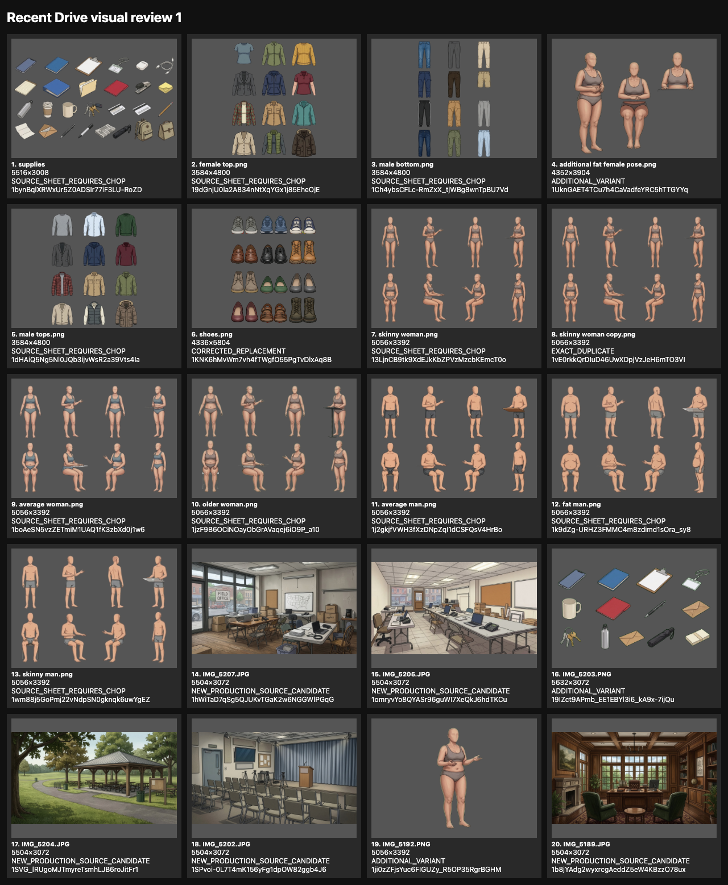
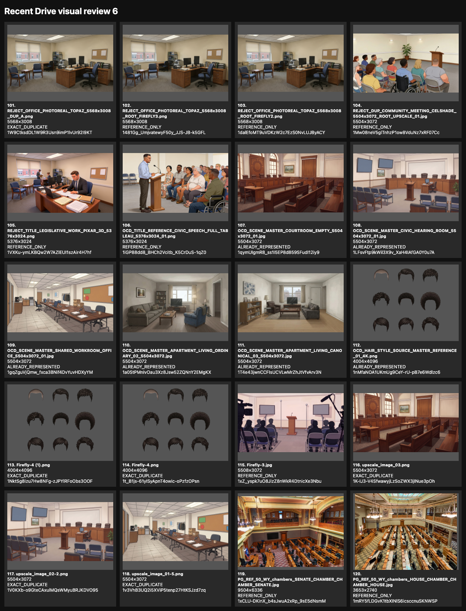
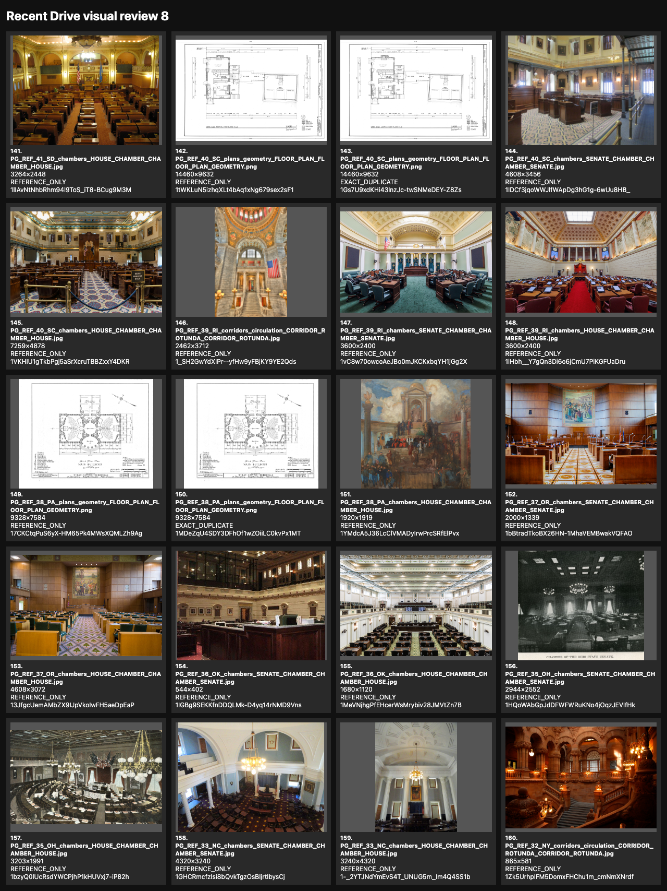
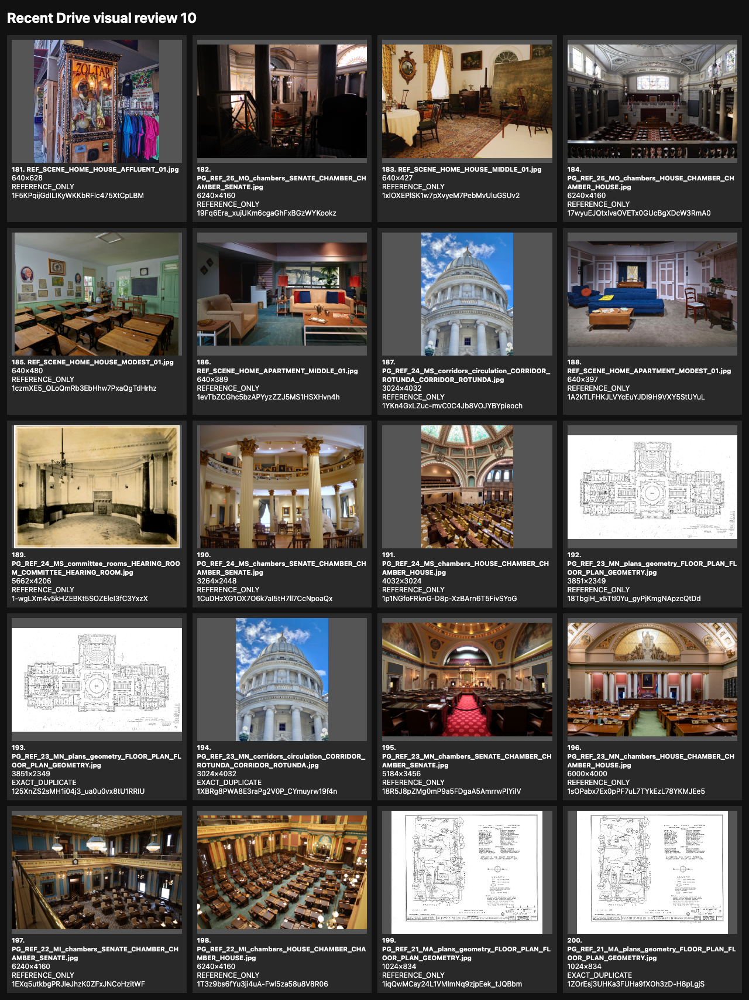
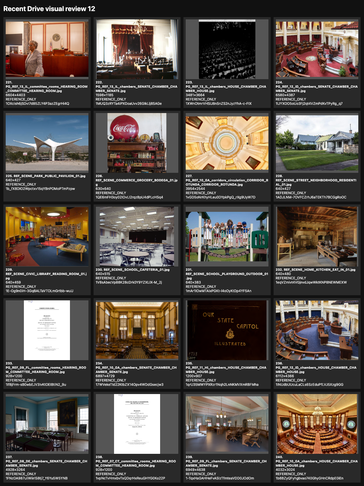
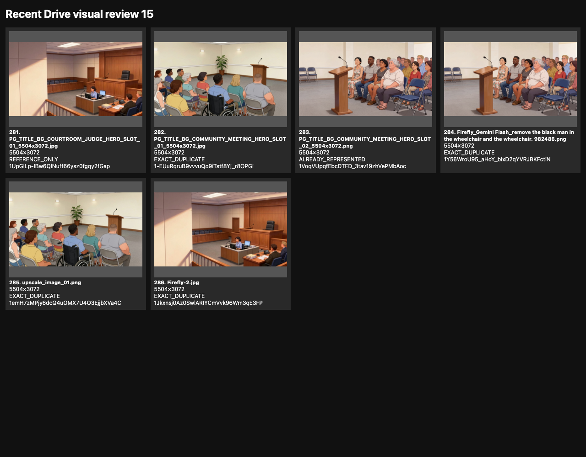

Candidate/reference QA evidence only. These 15 pages cover all 286 images returned by the 72-hour Drive inventory. Each tile records the inventory position, filename, native raster dimensions (or review-render dimensions for a mislabeled PDF), classification, and Drive ID. This review does not release pixels or approve anchors.





